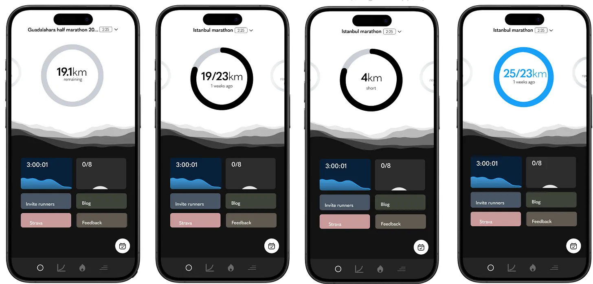
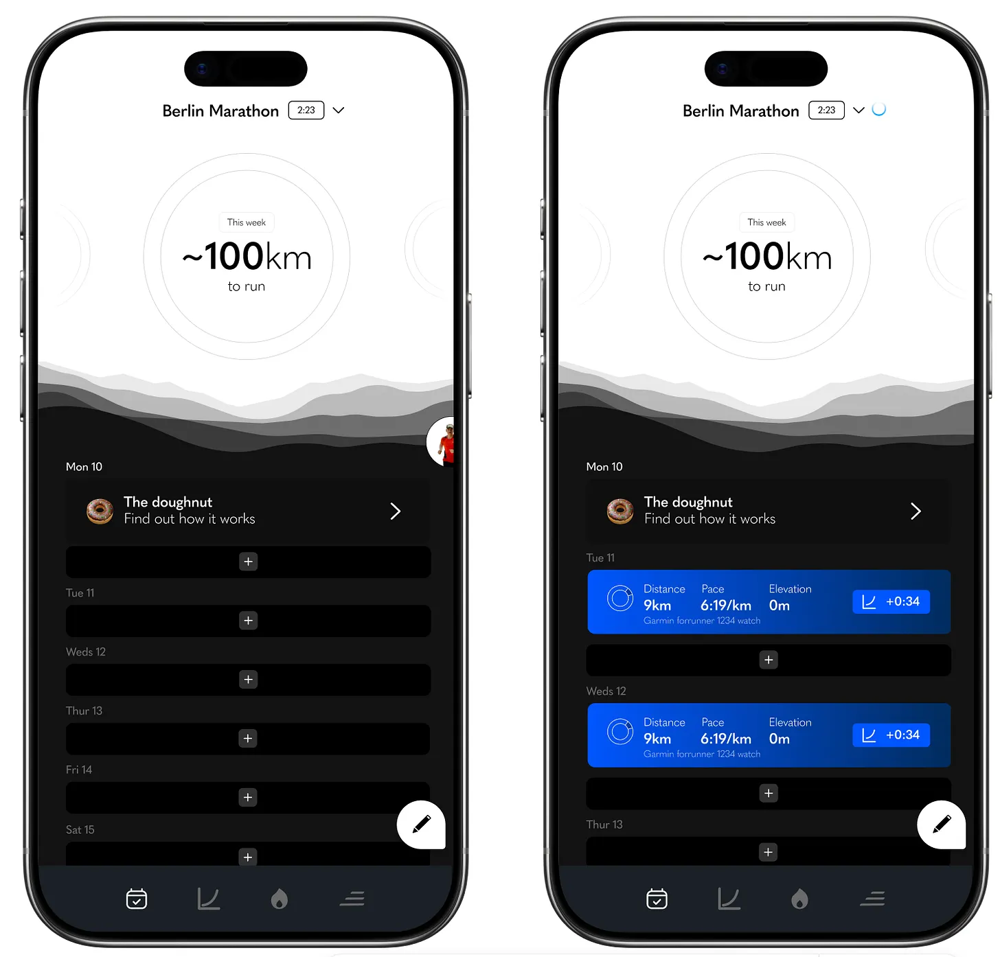
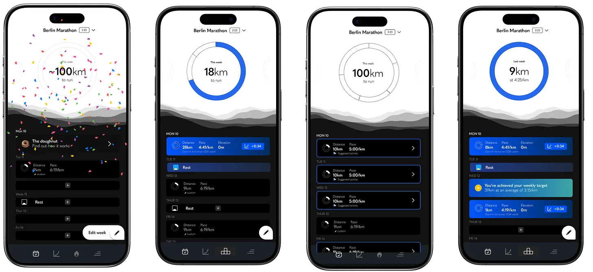
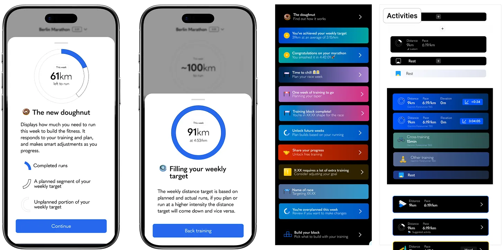

Answering the wrong question
How we went from a question with no answer, to a question with a clear one.
TLDR
- Kaizen used adaptive training, calibrated to each user's actual fitness
- Users kept asking for a prescriptive plan instead
- Giving them one would break what made Kaizen unique
- Every direct answer made the product worse
- The question we'd been asked ("how do we add plans without becoming prescriptive") was unsolvable
- Needed to find what users were actually asking for, not what they were saying
- Realised users weren't asking for a plan because they wanted a template
- They were asking because marathon training is uncertain and a plan is a hedge against that
- Real ask was orientation and trust across time
- Reframed the design problem from "give them a plan" to "give them a navigable timeline"
- Flexible, navigable timeline (months, weeks, days, interconnected)
- Designed against three constraints: minimal, smooth, concise
- Static dashboard cards became dynamic activity, information, and recovery cards
- Each week became a navigable unit users could move through
- 10.9% lift in trial-to-paid conversion
- Foundation for the training systems work that came after
- Static dashboard became a surface for activity, information, and recovery cards
- Schedule became the substrate everything else got built on
- Founding designer, end-to-end
- Reframed the design question itself
- Research synthesis (usability tests, support, customer interviews)
- Information architecture and interaction design
- Articulation and team alignment
The problem we couldn’t solve
Kaizen worked in a particular way. Instead of giving you a generic training plan and hoping for the best, it adapted to your actual fitness, measuring training load against your current ability, calibrating a weekly target you could realistically hit, adjusting after every run. The whole thing was built on the principle that prescriptive plans don’t work for most people, because most prescriptive plans are imitating elite training schedules and asking too much of bodies that aren’t ready to run them. (It’s one of the reasons people get injured, too much, too soon.)
But users kept asking (or hinting via complaints on Discord) for plans nonetheless. “Do X on Monday, Y on Tuesday.” And the approach was giving some obvious success to our competitors.
We couldn’t give them that without breaking what made Kaizen unique. So the question we kept asking ourselves, how do we address this without becoming prescriptive, was unsolvable as posed. Every answer made Kaizen worse, or made it the same as everyone else.

What I started to notice
The breakthrough came in the background of user conversations we were having for other reasons. Usability tests, remote questionnaires, the stream of customer support I was doing day-to-day. In different ways people kept gesturing at this gap, but using different language to describe it and slowly something clicked.
People weren’t asking for a prescriptive plan because they wanted to follow a template. They were asking for one because running a marathon (or any long distance race) is genuinely uncertain. Eight, twelve, sixteen weeks of training. A single big performance at the end where you have to (or want to) deliver. The possibility of injury. Life events. Maybe you’re raising money. A lot can happen, and most of it is out of your control.
A plan, in that context, isn’t really a plan. It’s a hedge against uncertainty. Stick to the template, and I’ll make it. Even though that’s not actually true (the user hasn’t done anything yet, and the plan can’t truthfully promise outcomes), the feeling of certainty is what they’re buying.
So the design problem wasn’t “give them a plan.” The design problem was “give them a sense of orientation and trust across time.”
Reframing the problem
I was listening to a podcast around this time about typology, the Christian theological practice of reading Old Testament figures as pre-figurings of New Testament ones. Moses prefiguring Christ, that kind of thing. The whole frame is about twinning two things together so they explain each other. It’s a way of imposing meaning on history by reading one thing through another.
It struck me that Kaizen was doing something close to the opposite of this. We weren’t twinning the user’s training to a template. We were doing the inverse: taking each user’s specific situation, current fitness, target race, available time, recent runs and shaping a response that was bespoke to them. Context-sensitive adaptation. Anti-template thinking.
Which gave me the language for what the problem actually was, and what our solution actually was. It wasn’t a plan. It was the opposite of a plan. It was a journey, made specifically for you, that adapted as you moved through it.
Once I had made that shift, the question of what users were really asking for resolved. When they said they wanted a training plan, what really sat underneath that was a timeline. A schedule. Something they could look at, navigate, see what was coming, see what they’d done, and trust that someone (or something) was holding the shape of it for them as they progressed.
That was a different design problem. And it had a much clearer answer.
Finding the form
I went looking for how to interact with a schedule done well. Running and fitness apps were mostly terrible at this, fiddly and congested on mobile, over the top on desktop, unclear hierarchies, too much information and too little signal. Calendar apps were closer to the model I needed. I also looked at agentic-experience prototypes that were starting to appear, and at speculative work on Dribbble (mostly for inspiration on small interactions rather than anything practical).
I knew from past projects at Gastfreund GmbH (we built a Slack for hotels) that anything combining dates and content can get complex faster than it looks. So I leaned hard on three constraints from the start: minimal, smooth, concise.

The form came together quickly. We kept the fundamental IA intact (actually we improved it, by defining a hierarchy of time units the app was feeding back within: top tray had months, the weekly target/doughnut was the week, the feed gave it in days). We also made each week a navigable unit, so a user could flip forward or back a week at a time across their whole training block and see how their week and doughnut/target evolved.
Now we had a foundation.
What it opened up
Once we had a flexible, navigable timeline, we could put almost anything on it.
A common complaint about Kaizen had been that the dashboard felt simplistic – that the static cards didn’t offer enough value, which contributed to churn. With the new feed, we suddenly had a whole surface of interactions that could appear at the right moments in a user’s training: activity cards that gave small updates when a run had impacted their prediction; information cards explaining how Kaizen worked at the moment a user might be confused; taper notifications; race-week prompts; congratulations and recovery cards (still basic but much more than nothing). Subtle visual streaks built into the doughnuts. The ability to skip forward and back through time to see what was coming or review past weeks – which mattered because it built trust that Kaizen had the shape of the whole training block, not just today.
It also let us tie the weekly target much more directly to the specific runs a user was planning. Which, when it shipped, contributed to an increase in our trial-to-paid conversion by a whopping 10.9%.


And it became the foundation for what came next – the training systems work, where users could not only get a target calibrated to their fitness, but also choose an approach to how they ran, and have the feed populate accordingly. None of that would have been possible on the old static dashboard. The schedule wasn’t just a feature. It was the substrate everything else got built on.
Coda
The hardest part of this process wasn’t really the design. It was noticing that the question we’d been trying to answer was the wrong one, and having the patience to find the real one underneath.
In this case, users weren’t asking for a plan. They were asking for a sense of orientation and trust across time. The word they were using (”plan”) was a stand-in, and the design we’d been pushed toward by it would have made the product worse. The work was in noticing that, and finding what was actually being asked.
This is a lot of what creative direction actually is. Less about taste, more about sitting with a problem long enough to see what’s actually being asked. And then having the conviction to design for that.

Originally published on Substack.